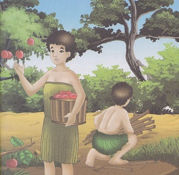
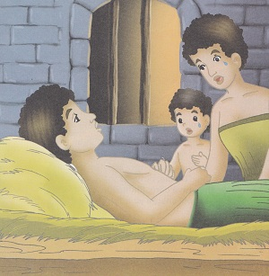
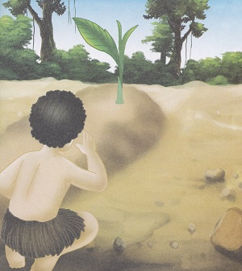
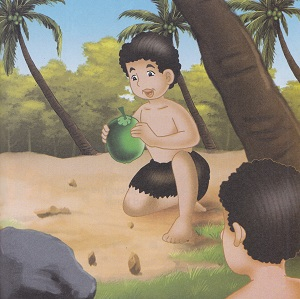
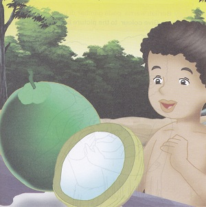

Cerita Neera
( Cerita Rakyat Papua Barat )
Dahulu kala, hiduplah seorang lelaki bernama Mora dan istrinya Taribuy, Mereka adalah manusia pertama yang tinggal di Pulau Moor, mereka hidup bergantung pada tumbuh-tumbuhan di hutan dan hasil kebun mereka. Mora dan Tarubuy hidup bahagia, namun sayangnya mereka belum di karunia anak setelah sekian lama menikah. Namun mereka selalu berdoa dengan ikhlas.
Akhirnya Yang Maha Kuasa mendengar dan megabulkan permohonan mereka. Sembilan bulan kemudian, lahirlah bayi lki - laki yang di beri nama Reio yang artinya Kasihan dia. Reio pun tumbuh baik dan lincah, Namun, ketika Reio berusia lima tahun, ia harus kehilangan ayahnya. Mora jatuh sakit dan tidak dapat tertolong. 
Sebelum meninggal Mora sempat berpesan kepada anak dan istrinya," Jika aku meninggal tolong kuburkan aku di halaman rumah dan rawatlah makam ayahnya dengan baik, Suatu malam, tumbuh sebatang pohon tepat di kepala makam Mora Pohon itu di jaga dan di rawat dengan baik sampai akhirnya berbuah.
Rieo dan ibunya baru kali pertama melihat buah jenis ini, Reio memetik buah tersebut dan berpikir apa yang bisa di lakukan dengan buah tersebut. Akhirnya, Reio mulai menguliti kulit buah. Buah itu mempunyai serabut di bagian dalamnya, ada bagaian yang disebut tempurung. Setelah tempurung dipecahkan terlihatlah bagian buahnya, yang putih. Itulah buah yang kini kita kenal dengan buah Kelapa.
Buah yang tumbuh di bagian kepala pusara Mora itu sangat mencirikan Mora. Serabut kelapa mencirikan rambut, tempurung mencirikan tulangnya, tiga buah lubang yang biasa ada di ujung buah menunjukkan mata dan mulut. air kelapa mencirikan daging tubuh. Mora dan bakal tunas kelapa menandakan jantungnya. Dalam bahasa Moor, buah itu diberi nama Neera yang artinya Kepala Mora. Dengan demikian, bertambahkah jeniss buah - buahan di pulau Moor. Buah kelapa yang enak ini sangat di gemari oleh orang Moor.